Mega Slider - Drag & Drop Drupal Slideshow
Version 2.11Thank you very much for purchasing our products. This document will guide you through the setup process of this module. If you have questions about anything about this theme that isn't covered in this documentation, please post your question here.
Getting started
You can insert your development link (start with http://) below to make some link in this document clickable and go straight to your site
Requirement
Let's go over the minimum requirements that you will need in order to have a fully functioning site running our module.
- Drupal 7
- Media and Ctool modules
- Web server: Apache, Nginx, or Microsoft IIS
- PHP 5.2.5 or higher (5.3 recommended)
- MySQL 5.0.15 or higher with PDO, PostgreSQL 8.3 or higher with PDO, SQLite 3.3.7 or higher
If you already have a working install of Drupal modules feel free to skip ahead to theme installation.
Download package contents
Once you have downloaded and unzipped the apage package you will be faced with a list of files and folders. An explanation of these is as follows. Any item not mentioned here should be ignored for the moment.
| md_slider-7.x-2.7.zip | This is a zip archive of the module. You can use this for installing via Drupal admin interface | |
| md_slider | This is module folder, you can use to transfer via ftp or just copy to your localhost | |
| Documentation | This is the help documentation. To view simply open index.html found inside this folder |
Install the module
To install Mega Slider module, is not much different to installing any other (free) Drupal modules, so you might be familiar with this process already. If not, please follow instructions below.
You can install by using Drupal module uploader or using FTP
Drupal module uploader
- Download media, file entity and ctools modules.
- Log into your website
- From admin toolbar, click Modules
- Click
Install new module - Browse to the media module file.
- Click
Installand wait while plugin is uploaded to your server - After successfully message, click "Enable newly added modules"
- Click
Install new module - Browse to the ctools module file.
- Click
Installand wait while plugin is uploaded to your server - After successfully message, click "Enable newly added modules"
- Browse to the module's zip file (it is located in the folder you've downloaded from CodeCanyon) and choose that file.
- Click
Installand wait while plugin is uploaded to your server - After successfully message, click "Enable newly added modules"
- Find
MD Sliderand tick the checkbox (make sure it is checked) - Scroll to bottom and click
Save configuration
You maybe ask to install dependent module, just click accept to install it
FTP
You can also install MD Slider via FTP
- Download and extract media, , file entity, Ctools module, you will get folder named media and ctools .
- Browse to the module's zip file and extract that file, you will get folder named "md_slider"
- Open your FTP program and FTP into your site and navigate to the
sites/all/modules/directory - Upload
md_sliderandmediafolder to this directory - Back to your drupal admin toolbar, click Modules
- Find
MD Sliderand tick the checkbox (make sure it is checked) - Scroll to bottom and click
Save configuration
List require modules:
Module update
When module has a bug fixes or enhancements, you will be notified to upgrade..
Installing updates is just involves replacing the old module files with the new ones. It's always a good idea to backup everything before you upgrade, especially if you have made any changes to MegaSlider's files, as the upgrade will overwrite all files. Sliders that you created though Drupal admin will all remain intact.
Backing Up
- It is always a good idea to back up your module before making any changes
- Open your FTP program and FTP into your site and navigate to the sites/all/modules/ directory.
- Download the md_slider folder and save it as a backup
Upgrading
- Download the new version of the module
- Browse to the module's zip file (it is located in the folder you've downloaded from CodeCanyon) and extract that file, you will get folder named md_slider
- Put your site to Maintenance mode (Go to
ConfigurationthenMaintenance mode. Make sure thePut site into maintenance modebox is checked and clickSave configuration) - Switch to your FTP program, FTP into your site and navigate to the sites/all/modules/ directory.
- Transfer the new md_slider folder into the sites/all/modules/ directory on your server, overwrite the existing one.
- Run update.php script from your drupal site.
Note: If you are running a local server, just copy and override the files.
Video tutorial
Install Mega Slider
Create Slider
The Tools Panel
The Timeline Panel
Managing sliders
After installation, you can go to Structure » MD Slider to see Mega Slider overview page.
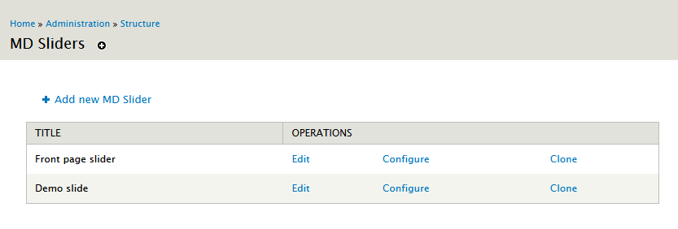
Here you can manage all your sliders, edit, clone or delete a slider.
Creating a new slider
To create a new slider, you can go to Structure » MD Slider and click "Add new MD Slider" to start creating new slider.
Edit slider
One slider is split in two parts: Config and Main slide items. You can click to Configure to change slider config and click Edit to change slider items.
Cloning an existing slider
Cloning an existing slider is easy, just click Clone link from slider overview page.
Delete a slider
To delete a slider, you need to click Configure and scroll to bottom. Here you will find delete button, just click to delete your slider.
Basic config
At the first screen, you will see several parameters that you can change to customise your slider.
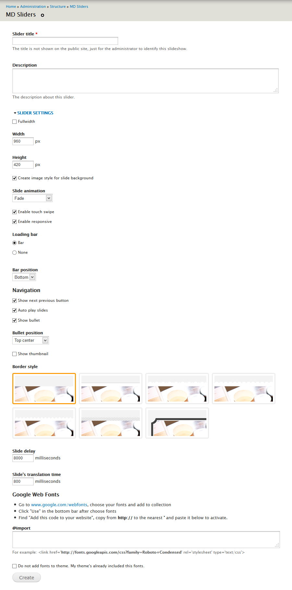
- Slider title:
This title is just for the administrator to identify the slideshow. - Description:
If title field is not long enough, you can type description of your slider here - Fullwidth:
Tick if you want your slider full width - Width:
Insert your slider width (in pixel). If you checked full width, this value will be effect width. - Height:
Insert your slider height (in pixel) - Create image style for slide background:
This function helps you to automatically create image according to your slideshow size. If you have pixel perfect image for slider and don't need automatically created image, uncheck this box. (This option is not available when you enable slider fullwidth) - Slide animation:
Choose animation to your slide - Enable touch swipe:
if you want to navigate slide on touch device, check this box - Enable responsive:
if you want your slider to be automatically fit to wrapper (the original proportion is remained), check this box - Loop:
Check if you want slider start over when reaching last item. - Loading bar:
Enable/disable your slider loading bar - Navigation:
show next, previous arrows, play button... Here you can choose bullets and thumnails position too. - Border style:
Click and choose border style for your slider - Slide delay:
milliseconds between slide transitions - Slide's translation time:
speed of the transition (in milliseconds) - Google Web Fonts:
Add google font to use on your slider. If you've already add those fonts to your theme, check "Do not add fonts to theme".
Click Create button, you will go to edit step.
Edit & Custom your slide items
After click Create button, you will go to edit page
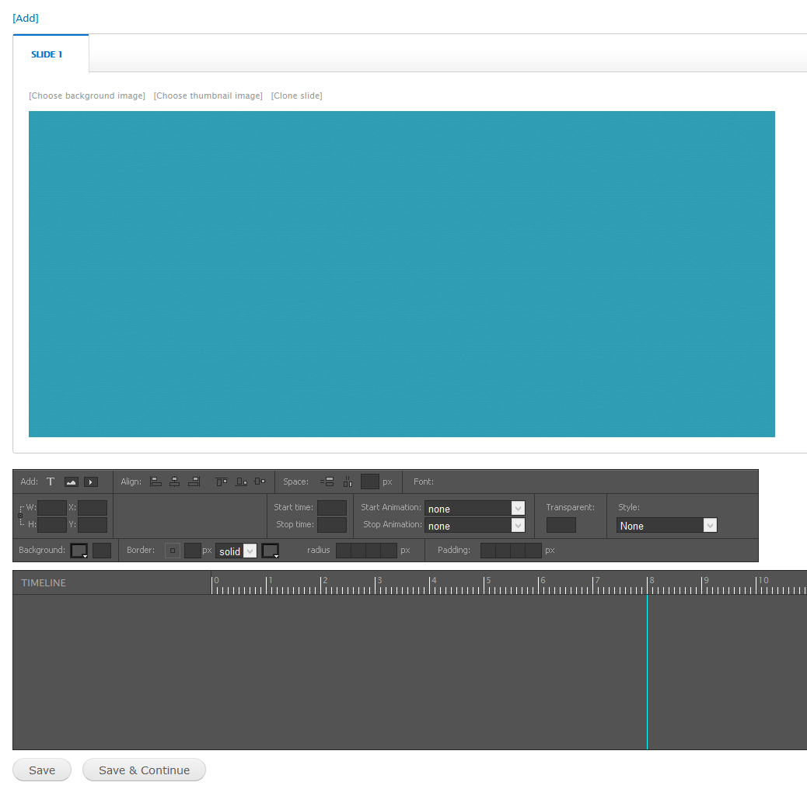
This page split in 3 parts: slide items panel, Tools panel and Timeline panel
Slide items panel
Each tab in the slide item panel is representative of each slide item. You can Add new {1}, change slide image and transitions {4}, clone {5}, re-order {2} or remove {3} slide item. Just click and drag your mouse.
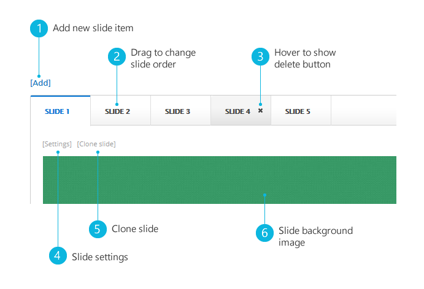
Tools panel
The Tools panel helps you add new objects, edit object align, background, animation...
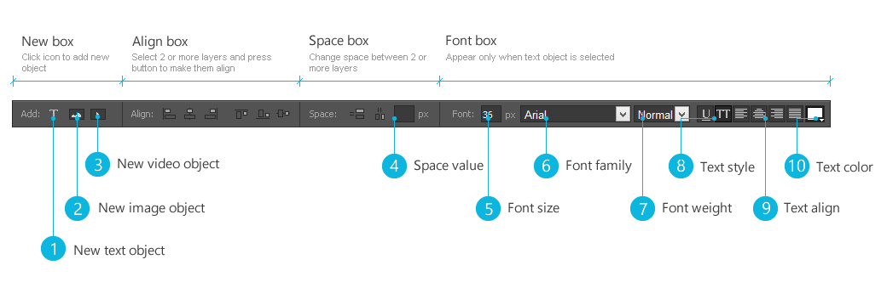
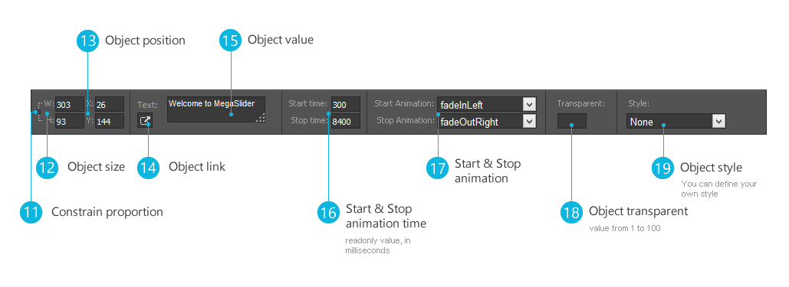
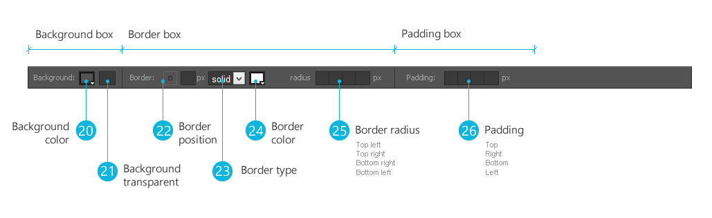
When you select an object, the Tools panel will show you options. Some tool options are only displayed if you choose a particular type of selected object.
Timeline panel
The Timeline panel organizes and controls a slide's content over time in layers. Layers are stacked on top of one another, each one contains a specificed text, image or video.
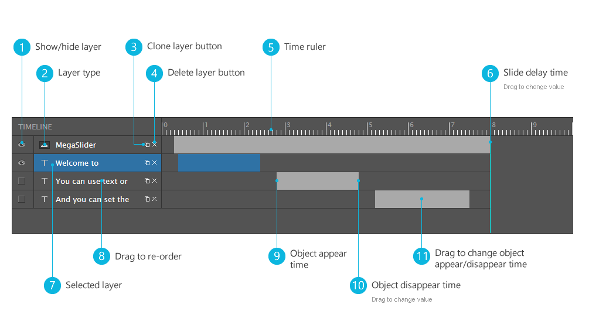
Slides can have different delay time options, you can drag delay line {6} to change this value.
Controls in the layers section of the Timeline make it possible to hide, show {1}, clone {3}, delete {4} or re-order {8} layers. You can drag to adjust layer start {9}, stop {10} time or position {11}.
Working with objects
Add new object
You can add new object to slide item by clicking to icons {1}, {2}, {3} at tools panel. In term of image object, you can upload image from your computer or choose existing image from server. Video object supports Youtube & Vimeo, all you need to do is provide Youtube or Vimeo video link.
Selecting an object
Before you can do anything with any object, you must select it. You can select object with mouse click or using layer in timeline panel. You can also select multi objects by holding ctrl button and click on objects.
Selection information in the tools panel
Whenever you select an object, the tools panel will show information & properties of the object. You can customize objects by changing value from tools panel.
Moving an object
This is a very simple step, and you can move object to exactly place that you want:
- Select an object
- Press & hold left mouse button and move your pointer.
- Or you can change in tools panel: enter the X and Y coordinates for the location of the top left corner of the selection ({13} - tools panel).
Aligning objects
The Align commands in the tools panel give you a wide range of arrangement options, allowing you to do any of the following:
- Align selected objects along a horizontal or vertical axis.
- Align selected objects vertically along their right edge, center, or left edge, or horizontally along their top edge, center, or bottom edge.
Changing objects space
The Space commands in the tools panel help you control space between objects. You can change horizontal or vertical space.
- Select 2 or more objects
- Enter number into space value ({4} - tools panel) (leave blank if you want space evenly)
- Press space button
Style an object
You can style an object depending on object type
- Image/Video objects: you can change background ({20} - tools panel), make objects transparent ({18} - tools panel), choose style ({19} - tools panel)
- Text object: with text object, you can do more: choose font family, font size, text align and text color (Font box- tools panel)
Enable slider
After creating slider, you can use slider as a block or add it to node using custom field.
Assign slider to region
After creating slider, your slider will be available as a block, you need to assign it to some region. From admin toolbar, click Structure » Block, find "MD Slider: (your slider name)" and drag it to your desire region.
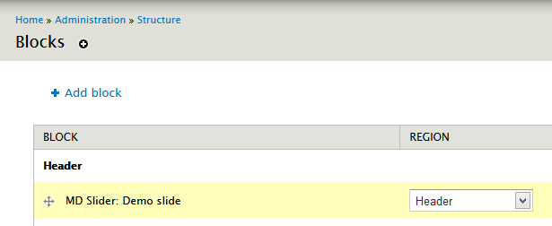
Add slider to node
You can add slider to node using custom field.
- Navigate to the Content types page (Administer » Structure » Content types).
- In the table, locate the row that contains your content type and click the
manage fieldslink. - In the Add new field section, enter a label for the field.
- In the Field name field, enter the machine name for the field. You can only use numbers, lower-case letters and the underscore character (_).
- In the field type list, select MD Slider Field
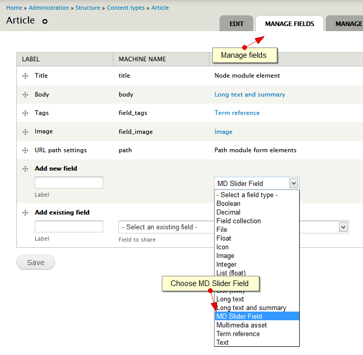
- Click
Save.
Customization
If you do want to create a custom style for your slider you can use a copy of the default css file, which is held in the same folder as this help file - see md-slider-style.css.
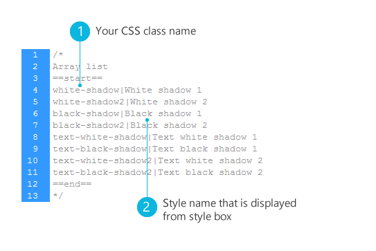
MegaSlider will check if you have custom file and use it. The following examples will explain the style suggestion names:
- default_theme/css/md-slider-style.css
- sites/all/libraries/megadrupal/md-slider/md-slider-style-{ID}.css
- sites/all/libraries/megadrupal/md-slider/md-slider-style.css
Photoshop file
Photoshop file just for custom border style. If your background is not white, and you use rounded border (border style - basic config step), change first layer color to fit your layer style. Export file (png 24) to md_slider/images/border folder.
General information
FAQs
Here you can find answers to the Frequently Asked Question about Mega Slider
There's a new version of Mega Slider available, how can I get it and update it on my site?
- First, login to CodeCanyon and under your profile click Downloads link.
- Re-download Mega Slider and extract it.
- Check Module update step
Can I update Mega Slider if I have purchased it in the theme?
In order to receive latest updates of Mega Slider you need to have separate license which you can buy via CodeCanyon. Otherwise you need to wait for your theme author to update Mega Slider and provide you newest version.
It is also important to mention that our support system is for those who have purchased Mega Slider directly. If you have purchased it within a theme, you should contact your theme author for support.
Need help?
If you need help with setting up the template, please post your question here. There are a few notes:
- Before you ask a question please make sure to scan the menu and read the specific section of your question.
- If it's a specific Drupal module question, Google (or any other search engine) is your friend and probably a hundred times faster in replying.
- If it's possible, please provide a link to your (demo) website so our stuff are able to quickly scan for possible issues.
Report a bug
If you found a bug, please send us an e-mail with a (small) description of the issue. Your help is always apreciated.
Credits
Modules
Frontend
Admin